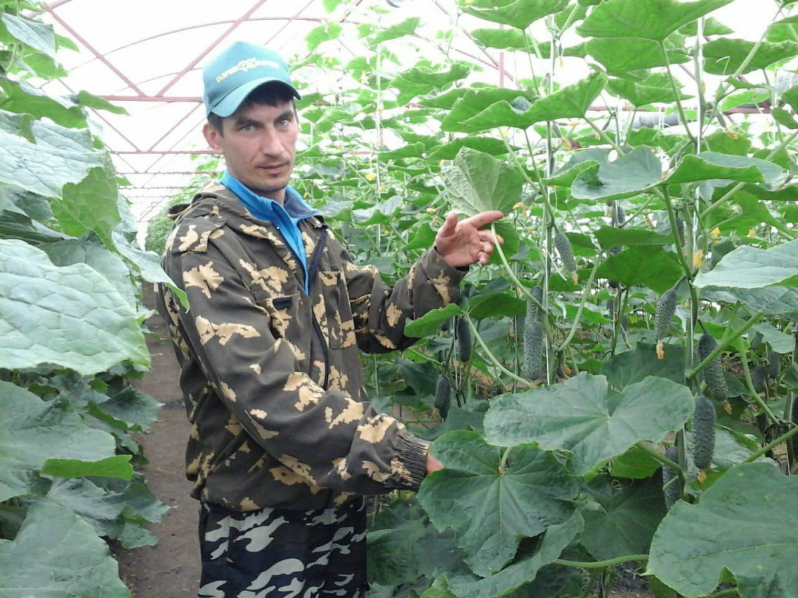

- ОПИСАНИЕ
- ОТЗЫВЫ
- ОТКУДА?
ОПИСАНИЕ
Томаты на ветке красные (помидоры) - более плотные, яркие и ароматные по сравнению с обычными. Они славятся низкой калорийностью и высоким содержанием витаминов, клетчатки, пектина и минеральных веществ. В них содержатся также каротиноиды, кислоты и мощный антиоксидант ликопин.
Помидор - незаменимый продукт в мировой кулинарии. Он - основа многочисленных соусов, маринадов, кетчупа, испанского холодного супа Гаспачо или итальянской закуски Капрезе. С ним делают салаты, его тушат, солят и консервируют. Помидоры на веточке особенно красиво смотрятся в запеченном виде.
ХАРАКТЕРИСТИКИ
- Страна
- Россия
- Поставщик
- Фермеры: Наталья и Юрий Лейшан
- Тип упаковки
- Крафтовый пакет
- Сертификаты качества
- В наличии
УСЛОВИЯ ХРАНЕНИЯ
- Срок хранения
- 7 дней
- Температура хранения
- от 3° до 7°
ПИЩЕВАЯ ЦЕННОСТЬ НА 100 Г
- Энергетическая ценность
- 18 ккал
- Белки
- 0.9 г
- Жиры
- 0.2 г
- Углеводы
- 3.9 г
С этим товаром покупают
Молоко 3,2 %
от Вадима Рошки
95 ₽ / 0,93 л

Хлеб пшеничный
от Дарьи и Марии
95 ₽ / 930 г
Яйца куринные
от Евгения Рошаль
120 ₽ / 10 шт
Масло сливочное 82 %
от Вадима Рошки
290 ₽ / 250 г
ОТЗЫВЫ
Помогите нам стать ещё лучше. Оставляя отзывы, вы таким образом указываете нам на зоны роста. Мы правда, читаем все отзывы.ОТКУДА?
Томаты на ветке красные (помидоры) - более плотные, яркие и ароматные по сравнению с обычными. Они славятся низкой калорийностью и высоким содержанием витаминов, клетчатки, пектина и минеральных веществ. В них содержатся также каротиноиды, кислоты и мощный антиоксидант ликопин.
Помидор - незаменимый продукт в мировой кулинарии. Он - основа многочисленных соусов, маринадов, кетчупа, испанского холодного супа Гаспачо или итальянской закуски Капрезе.